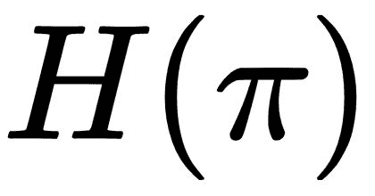

在上一章的最后，我们看了一眼使用一种叫做 PPO 的高级 RL 算法的神经网络。我们没有涉及的是这段代码如何工作的细节以及它的能力。虽然教你关于这个模型的所有细节本身需要一本书，但我们将尝试在这一章中介绍基本特性。此外，请记住，虽然我们将讨论 Unity 特定的培训实施，但许多概念可以应用到其他深度学习模型中。
在这一章中，我们将通过探索 Unity ML-Agents 示例，来了解使用 PPO 的learn.py培训脚本的几个内部概念。以下是我们将在本章中涉及的内容:
需要注意的一点是，我们使用神经网络或深度学习解决了一个非常具体的问题。然而，这并不意味着你学到的许多相同的概念不能应用于其他问题。当你阅读这一章时，请记住这一点。
在这一章中，我们将从我们停止的地方继续，所以在继续之前，请确保您已经完成了第 3 章、使用 Python 进行深度强化学习的结尾部分。
在我们进入 Unity 的训练脚本中使用的更先进的技术之前，我们想多了解一点关于代理人的训练可以如何中断。让我们打开 Unity，回到上一章停止的地方，看看我们如何使用以下步骤轻松中断代理的培训:
为网格示例设置参数
请记住，我们限制代理的步长，以避免代理无休止地运行。如果我们不这样做，我们可能会以代理运行很长时间而没有什么进展而告终，或者如果代理的步长阻止他们完成游戏，则根本没有进展。相反，过大的步长只会减慢训练速度。所以为了减少训练次数，我们总是尽量减少代理的步长。
在网格代理上设置最大步长
代理培训结果
我们在这里看到的是不一致的训练收敛，这表明我们的模型或场景有问题。我们将在下一节看看如何解决这个问题。
毫不奇怪，我们很容易陷入训练出错的境地。不幸的是，这些情况不是大爆发的那种，而是我们的代理将不会逐步学习或改进的那种。这通常是由以下原因造成的:
我们将在接下来的几节中更详细地讨论前两个问题。我们将在余下的一章中详细讨论第三个问题。
当你试图将奖励定得太高或太低，或者获得奖励的机会很少或很少时，奖励问题就会发生。在我们的上一个例子中，当我们将网格从 5 x 5 的区域扩展到 20 x 20 的区域时，我们也使我们的奖励非常稀疏或稀少。这意味着一个特工需要特别幸运才能偶然发现奖励。我们可以通过增加可用目标的数量来改善这一点。通过以下步骤纠正奖励不多的问题:
奖励问题通常很容易解决，如果你的代理训练缓慢，这应该是你首先要解决的问题。在下一节中，我们将看看如何解决不正确的观察空间的问题。
确保您为您的代理捕捉相关的状态观察对于成功训练代理是至关重要的。在大多数早期的例子中，我们建立状态观察的方式是非常简单的，但是正如你现在可以理解的，一个代理的状态可以是非常实际的。事实上，目前正在解决的一些 RL 问题的状态超过了已知宇宙中的原子数量——是的，你没看错。我们在上一章提到了这个主题，在那里我们演示了如何将代理人的观察结果作为输入映射到神经网络上。设置 Unity 外部大脑训练器时，您必须了解代理需要如何观察或观察什么。
为了解决我们当前的问题，或者使我们的代理在培训方面做得更好，我们将扩展我们代理的状态。在扩展我们代理的状态时，我们的代理应该能够中断更多的细节。毕竟，我们的代理人正在使用对游戏区的视觉观察作为其状态感。以下练习展示了我们如何通过扩展座席代表的状态或视觉观察来改进培训:
调整代理的视觉观察空间

视觉观察空间的比较
python python/learn.py python/python.exe --run-id=largegrid1 --
train
通过使用颜色并将观察空间从 84 x 84 增加到 256 x 256，我们能够使用更大的视觉状态来创建一个工作/学习代理，尽管速度要慢得多。看看你能否猜测出84 -> 256值之间的最佳视觉观察尺寸。测试完尺寸后，看看启用/禁用颜色对学习过程有什么影响。
如果您发现训练仍有困难，请再次增加numGoals参数。在最初的例子中，我们对 5 x 5 网格中的每 25 个单元都有奖励。当我们将网格尺寸增加到 20 x 20，有 10 个目标时，面积与奖励的比率仍然是 40 个网格单元比 1 个奖励(400/10 = 40)。
对经典的 80 年代 Atari 游戏所做的研究使用 RL 来教代理比人类玩得更好，使用相同的方法来捕捉状态。然而，我们不能不经过一点预处理就从图像中解读状态。幸运的是，Unity 训练器已经以卷积神经网络的形式整合了这一特性，我们将在下一节介绍。
多年来，在使用神经网络执行图像识别方面已经做了大量的工作，同时，开发了一种称为卷积神经网络的技术，以提供更好的识别图像特征的方法。该技术通过在图像上运行卷积步骤来实现，如下图所示:
这里所发生的是使用卷积步骤在图像上乘以由步幅设置的卷积矩阵，以便生成特征图。我们这样做是为了通过隔离像素部分和应用分组过滤器来隔离图像中的特征。如果我们不这样做，我们的网络将评估图像的原始像素，这将使识别图像中的重要特征变得困难。这就像看一张太近的照片一样。在使用神经网络识别图像的应用中，我们通常使用相应的池层，然后是另一个卷积层，接着是另一个池层。但是，这会极大地简化图像，从而从数据中移除空间信息。因此，在需要空间感知的游戏和模拟中，我们放弃了池层，而只使用卷积层。通过以下练习，了解learn.py培训师如何使用 CNN 层:
def create_visual_encoder(self, image_input, h_size, activation,
num_layers):
"""
Builds a set of visual (CNN) encoders.
:param image_input: The placeholder for the image input to use.
:param h_size: Hidden layer size.
:param activation: What type of activation function to
use for layers.
:param num_layers: number of hidden layers to create.
:return: List of hidden layer tensors.
"""
conv1 = tf.layers.conv2d(image_input, 16, kernel_size=[8, 8],
strides=[4, 4], activation=tf.nn.elu)
conv2 = tf.layers.conv2d(conv1, 32, kernel_size=[4, 4],
strides=[2, 2], activation=tf.nn.elu)
hidden = c_layers.flatten(conv2)
for j in range(num_layers):
hidden = tf.layers.dense(hidden, h_size, use_bias=False,
activation=activation)
return hidden
conv1 = tf.layers.conv2d(image_input, 16, kernel_size=[8,8],
strides=[4, 4],
activation=tf.nn.elu) conv2 = tf.layers.conv2d(conv1, 32,
kernel_size=[4, 4], strides=[2, 2], activation=tf.nn.elu) conv3 =
tf.layers.conv2d(conv2, 64, kernel_size=[2, 2], strides=[1, 1],
activation=tf.nn.elu) hidden = c_layers.flatten(conv3)
python python/learn.py python/python.exe --run-id=gridconv1 --train
这包括了 CNN 图层的基础知识。我们运行的大多数其他 Unity 示例不会使用视觉观察来捕捉状态。然而，我们将在最后一章第六章、重新审视玻璃容器——多智能体生态系统中重新审视 CNN。在那之前，网上有很多关于如何设置内核大小和步幅的信息，感兴趣的读者可以谷歌一下 CNN。
在下一节中，我们将仔细了解什么是体验回放，以及 Unity 培训师如何使用它进行培训。
自从我们在 DQN 的第一个例子以来，我们一直在内部使用经验回放来更有效地培训代理。ER 只不过是以填充缓冲区的<state,action,reward,next state>元组的形式存储代理的经验。然后，代理在培训中随机遍历或采样这个经验缓冲区。这有利于保持代理更加一般化，并避免本地化模式。下面是添加体验回放后我们的学习流程的更新图:
在上图中，您可以看到代理如何将经验存储在缓冲存储器中，然后在每个步骤中随机从中取样。随着缓冲区的填满，旧的体验被丢弃。这可能看起来很违反直觉，因为我们的目标是找到最佳或最优路径，所以让我们通过下面的练习来进一步探索这个概念:
python python/learn.py python/python.exe --run-id=hallway1 --train
这将运行 Unity 用示例配置的默认训练。记住，我们可以访问python文件夹中的trainer_config.yaml文件中的训练参数。
在运行默认示例时，请注意代理的功能有多差。出现这种情况的原因是代理当前的经验缓冲太小。如果您选择 Unity environment 窗口，您将看到代理倾向于停留在走廊的一端，很少能够找到达到目标(奖励)的最佳路径。我们可以通过增加经验缓冲区的大小来缓解这个问题，从本质上来说，就是增加代理人的短期记忆。
当代理训练时，经验缓冲器回收旧的记忆并用新的代替它们。正如我们所讨论的，这样做的目的是打破任何本地化的模式，或者说，从本质上讲，打破代理只是重复自己的情况。然而，这样做的缺点是代理可能会忘记最终结果是什么，这就是上一个例子中发生的情况。我们可以通过增加经验缓冲区的大小来解决这个问题，我们将在下一个练习中进行:
HallwayBrain:
use_recurrent: true
sequence_length: 64
num_layers: 2
hidden_units: 128
memory_size: 256
beta: 1.0e-2
gamma: 0.99
num_epoch: 3
buffer_size: 1024
batch_size: 128
max_steps: 5.0e5
summary_freq: 1000
time_horizon: 64
buffer_size: 4096
python python/learn.py python/python.exe --run-id=hallway2 --train
tensorboard --logdir=summaries
使用不同经验缓冲区大小的训练运行比较
比较训练示例——就像我们刚刚通过调整单个参数所做的那样——是了解更多关于它们对每个模型或参数的影响的好方法。训练的一个过程是选择一个参数的最小/最大参数值，并对每个极值进行训练以观察效果。在我们的上一个练习中，我们可能已经为经验缓冲选择了一个最大值，但是如果我们不确定，我们可以用一个更大的值运行另一个训练会话。找到最小/最大范围后，我们可以尝试在该范围内优化参数。
如果你使用最小/最大训练方法，只要记住你一次只能改变一个参数。当另一个参数改变时，你可能会发现一个最优参数并不是最优的。当你第一次开始的时候，这可能是有挑战性的，所以尽你最大的努力保持耐心，训练，训练，训练。
正如我们已经看到的，使用经验缓冲区有其局限性，理想情况下，我们需要一种更好的方法来代表代理人的长期记忆。与我们第一次看到的相比，Hallway的例子有更多的变化，我们将在下一节讨论这个大的变化。
Hallway和GridWorld例子之间的一个主要区别是他们对状态的感知，或观察。我们已经知道GridWorld代理使用了视觉观察，但是我们从来没有真正了解过Hallway代理使用了什么状态输入。事实证明，Hallway代理以不同的方式收集状态观察。理解其中的区别对我们来说很重要，因此打开 Unity 并完成以下练习:
public override void CollectObservations()
{
float rayDistance = 12f;
float[] rayAngles = { 20f, 60f, 90f, 120f, 160f };
string[] detectableObjects = { "orangeGoal", "redGoal",
"orangeBlock",
"redBlock", "wall" };
AddVectorObs((float)GetStepCount() /
(float)agentParameters.maxStep);
AddVectorObs(rayPer.Perceive(rayDistance, rayAngles,
detectableObjects, 0f,
0f));
}
代理使用光线投射来观察状态
您可以返回 Unity 并确认走廊大脑上的向量观察大小设置为使用大小为36的连续。如果您想要将对象类型添加到此示例中，您将需要重新计算此参数。当然，这里还有更多。你想明白了吗？也许下一节会有所帮助。
首先要注意的一件事可能不太明显，那就是我们的代理不再依赖于对其环境的全面了解，就像在我们所有其他的例子中一样。例如，在 GridWorld 中，代理人用摄像机观察整个游戏区域，并使用获得的图像作为其状态观察。但是，假设一个智能体需要了解一个世界的整个游戏区域，这现实吗？不太可能，这在我们的首选参考《自然》中肯定不会发生。在自然界，动物当然不知道世界的一切——远非如此。动物只与它周围环境的局部视图互动，这是由它的视觉、听觉、触觉等感官决定的。这使得动物能够更好地将其行为归纳到各种情况和环境中。这听起来确实像是我们的特工需要做的事情。
幸运的是，当一个代理只能看到他们世界的一部分时，PPO 训练器为部分可观察性问题提供了强大的支持。然而，为了更好地理解这一点，让我们重温一下Hallway的例子，并关闭一个允许我们的代理仅使用世界的局部视图进行学习的功能。打开 Visual Studio 代码并完成以下步骤:
HallwayBrain:
use_recurrent: false
sequence_length: 64
num_layers: 2
hidden_units: 128
memory_size: 256
beta: 1.0e-2
gamma: 0.99
num_epoch: 3
buffer_size: 4096
batch_size: 128
max_steps: 5.0e5
summary_freq: 1000
time_horizon: 64
python python/learn.py python/python.exe --run-id=hallway3 --
train
我们已经将我们的问题从马尔可夫决策过程转换为部分观察的马尔可夫决策过程，或简称为 POMDP。
让整个训练环节跑起来做对比，一定要用 TensorBoard 监控结果。通过关闭use_recurrent选项，我们基本上禁用了代理对递归网络层的使用。这些循环层充当另一种形式的扩展内存，我们将在下一节中讨论。
通过剥夺代理的全面观察的全知能力，我们需要允许我们的代理更好地概括，从而能够长期学习。我们通过添加由长短期记忆细胞或 LSTM 层组成的循环层或块来做到这一点。
这些层/单元为我们的代理提供了临时内存，其工作方式如下图所示:
循环网络本质上是网络中几个隐藏层之间的桥梁，通过网络强化好的或坏的经历。我们可以通过下面的练习来看看这在代码中是如何工作的:
def create_recurrent_encoder(self, input_state, memory_in,
name='lstm'):
"""
Builds a recurrent encoder for either state or observations
(LSTM).
:param input_state: The input tensor to the LSTM cell.
:param memory_in: The input memory to the LSTM cell.
:param name: The scope of the LSTM cell.
"""
s_size = input_state.get_shape().as_list()[1]
m_size = memory_in.get_shape().as_list()[1]
lstm_input_state = tf.reshape(input_state, shape=[-1,
self.sequence_length,
s_size])
_half_point = int(m_size / 2)
with tf.variable_scope(name):
rnn_cell = tf.contrib.rnn.BasicLSTMCell(_half_point)
lstm_vector_in = tf.contrib.rnn.LSTMStateTuple(memory_in[:,
:_half_point], memory_in[:, _half_point:])
recurrent_state, lstm_state_out = tf.nn.dynamic_rnn(rnn_cell,
lstm_input_state,
initial_state=lstm_vector_in,time_major=False,
dtype=tf.float32)
recurrent_state = tf.reshape(recurrent_state,
shape=[-1, _half_point])
return recurrent_state, tf.concat([lstm_state_out.c,
lstm_state_out.h],
axis=1)
HallwayBrain:
use_recurrent: true
sequence_length: 128
num_layers: 2
hidden_units: 128
memory_size: 1024
beta: 1.0e-2
gamma: 0.99
num_epoch: 3
buffer_size: 4096
batch_size: 128
max_steps: 5.0e5
summary_freq: 1000
time_horizon: 128
设置矢量观测堆栈大小
python python/learn.py python/python.exe --run-id=hallway4 --train
请随意返回并进一步优化这个示例。如果你对更多关于循环神经网络和 LSTM 细胞的信息感兴趣，网上总有很多。请记住，这是一个高级主题，需要你理解比本书所涵盖的更多的关于神经网络的内部细节。
在上一个例子中，通过理解如何最好地使用递归神经网络，我们看到了部分可观察性的力量，并为我们的代理提供了时间记忆。在你训练完最后一个例子后，你可能还会注意到代理还在纠结。看看是否可以增加时间向量状态的数量和内存量，以进一步优化代理。
在下一节中，我们将深入探究 PPO 对 DQN 的另一项重大改进——一种叫做演员-评论家训练的技术。
到目前为止，我们假设 PPO 的内部训练结构反映了我们第一次研究神经网络和 DQN 时所学到的东西。然而，事实并非如此。PPO 算法使用了一种被称为行动者-批评家的技术，而不是使用一个单一的网络来获得 Q 值或某种形式的政策。这种方法本质上是计算值和策略的结合。在演员-评论家，或 A3C，我们训练两个网络。一个网络充当 Q- 价值评估或批评家，另一个网络决定行动者或代理人的政策或行动。
我们在下面的等式中比较这些值，以确定优势:
然而，网络不再计算 Q 值，所以我们用它来代替对奖励的估计:
现在我们的环境看起来像下面的截图:
评论家和演员之间交流的误差项是从以下等式中得出的:
我们的目的是将误差降至最低，但更好的术语/等式是熵的计算:
熵()衡量的是概率的分布，而高熵代表一个代理有多个相似的动作，这使得代理的决策变得困难。熵值越小，代理人就能做出更明智的决策。这将我们的损失函数更新为:
最后，当我们结合价值和策略这两个损失函数时，我们得到损失的最终等式，如下所示:
这个损失函数是我们的网络(代理)试图最小化的函数。虽然这是我们从开始使用 PPO 以来一直使用的培训形式，但我们忽略了另一个重要的改进。行动者-评论家培训是为了与多个异步代理一起工作而衍生的，每个代理都在自己的环境中工作。我们将在下一节探讨培训的异步方面。
我们刚刚看到的 A3C 算法是由 Google DeepMind 开发的，作为一种将多个异步代理同时训练到全球监督网络中的方法。现在已经为多个异步训练设置了Hallway示例，我们可以相对快速地启动它。打开 Unity 并完成以下练习，以启用多代理培训:
选择禁用的走廊对象
打开所有走廊环境和代理
HallwayBrain:
use_recurrent: true
sequence_length: 256
num_layers: 2
hidden_units: 128
memory_size: 4096
beta: 1.0e-2
gamma: 0.99
num_epoch: 3
buffer_size: 4096
batch_size: 128
max_steps: 5.0e5
summary_freq: 500
time_horizon: 64
python python/learn.py python/python.exe --run-id=hallwayA3C --train
添加额外的内存和代理将使训练慢得多，尽管一开始您可能不会注意到太大的差异。这样做的原因是，代理人的记忆需要解决许多一致的良好记忆。一旦代理能够始终如一地做到这一点，您将会发现培训有所改进。看看下面的张量板输出，注意熵的收敛:
在这个图中需要注意的是，熵图清楚地表明训练进行得很好。还记得我们是如何最小化方程中的熵的吗，较小的值意味着代理人做出了更好的决策？下面的代码显示了Hallway示例的一个更好、更优雅的配置:
HallwayBrain:
use_recurrent: true
sequence_length: 32
num_layers: 1
hidden_units: 128
memory_size: 512
beta: 1.0e-2
gamma: 0.99
num_epoch: 3
buffer_size: 1024
batch_size: 128
max_steps: 5.0e5
summary_freq: 500
time_horizon: 64
前面的配置比我们之前运行的要精简得多。我们减少了层数、内存量、序列、缓冲区和时间范围参数。和往常一样，您可以随意返回并使用上一个示例，进一步探索其他培训课程中的参数。或者，您可以回顾并执行下一节中的练习，以获得更多经验。
使用以下练习来提高您对 RL 和 PPO 培训师的理解。
如果您在运行这些示例时遇到问题，请务必在线查看。这些样品可能会被磨损，许多其他人会进一步调整或增强它们。
在本章中，我们详细了解了 Unity PPO 训练器。这个训练模型最初是在 OpenAI 开发的，是当前的高级模型，也是我们开始构建更复杂的训练场景的重点。我们首先回顾了GridWorld的例子，以了解当培训出错时会发生什么。从那以后，我们看了一些培训表现不佳的例子，我们学会了如何解决这些问题。然后，我们学习了代理如何使用视觉观察作为我们模型的输入，前提是首先处理数据。我们了解到，使用视觉观察的代理需要使用 CNN 层来处理和提取图像的特征。之后，我们研究了使用体验回放的价值，以便进一步推广我们的模型。这告诉我们，经验和记忆对特工的训练很有价值，以至于我们研究了一种更高级的记忆形式，叫做循环神经网络。随着 LSTM 细胞块的反复出现，我们的代理人也不再需要观察整个游戏区。相反，我们的代理人现在可以使用一种叫做部分可观察性的技术来管理状态和意识。最后，我们通过研究一种叫做异步行动者-批评家，或 A3C，训练的高级技术来结束这一章。这种形式的培训使用一个内部的评论家和演员来管理跨多个异步代理的错误最小化。
在下一章中，我们将介绍使用多种配置的多个代理的进一步培训技术，其中我们将让代理相互竞争或相互合作来解决学习问题。